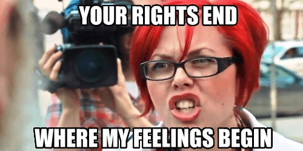

Thomas Hobbes is an Australian uni student hiding out in his mother's basement waiting for the singularity to arrive. As a backup plan he is secretly hoping to avoid the perils of an actual career by becoming a writer and travelling the world.


For those who don’t live in Australia, you have probably not had the misfortune of hearing the name “Clementine Ford“. If I may start this article with the closest thing we’re going to get to a compliment, she could be called Australia’s Jessica Valenti. She’s the same sort of rabid feminist who spends most of her time proudly seeking to harvest and bathe in male tears.
In her latest bit of activist attention whoring, she posted the above photo of her naked face and chest. It was in response to a middling Facebook post by Sunrise – an Australian morning show, warning women of the dangers of taking nude photographs and the risk of them getting stolen or shared without permission.
Now Sunrise usually doesn’t cover any stories more serious than a cat getting stuck up a tree, but it seems our dear Clementine was unable to sit idly by amid this outrage. Instead she had to launch a tirade against the show for its less-than-perfect devotion to feminist ideology. You can find the original post here, but for some of the highlights –
I have taken nude photos of myself and sent them to lovers. I’ve taken nude photos of myself when I’m bored. I’ve taken nude photos just because I have a smart phone and it’s fun.
None of that means I have asked for my privacy to be violated, my photos stolen and my very self made available for public humiliation and judgment. Consent is everything.
When Channel 7’s Sunrise asks ‘when will women learn’ instead of ‘why do men continue to view women as objects they can defile and violate while the world watches and tut-tuts’, they are victim blaming. They are saying it’s the responsibility of victims of crime and assault to prevent it and not the responsibility of society to make such crimes intolerable and unacceptable. Fuck your bullshit, Sunrise.

You’re an antiquated, pedestrian piece of rubbish and you truck in misogyny and everyday sexism. Consent is what happens when you give permission. Theft and assault is what happens when people take it from you despite you saying no. I’m not normally into using nudity as a form of protest.
I’ve kept my actual breasts out of this shot so it can be shared on FB without attracting the censorship of an organisation that’s afraid of women loving their own bodies but comfortable with men ridiculing and shaming them.
And so on, and so forth…
First of all honey, Facebook doesn’t “censor” your photos because you’re a woman. I can’t get my dick out either.
Second, I wonder at the nature of this protest, as taking a nude photo of yourself to protest photos being stolen is a bit like flinging your phone into a sewer so no one will steal it from you.
Third, you seem to be under the assumption your private parts are meant to remain so because men won’t be able to control their animal urges and will start humping you without warning.
This isn’t really true. Much the same way I can’t pull down my pants and take a dump on the sidewalk, most people find the sight of a pair of floppy old lady bits the weather bureau could hire as windsocks to be slightly unpleasant, and have decreed they should be kept tucked away in a civilized society.
Back to the original point, we see these arguments come up all the time, and they are as batshit insane as ever. It is the sort of worldview that, as I have written here before, only someone who grew up in the sterile confines of modern suburbia could believe.
At any other time in your life, I’m sure even feminists realize this. I’m positive they look both ways when crossing the street, even at a pedestrian crossing. I’m sure they lock their front doors at night, and if asked, would recommend others do so as well, blissfully free of accusations of supporting “theft culture.”
Yet when it comes to the issue of women’s safety, the sacred cow of the feminist movement, all logic is thrown out the window, and instead divine intervention is demanded whenever a women risks being taken out of her comfort zone. Lets look at the particular wording of Clementine’s post –
They are saying it’s the responsibility of victims of crime and assault to prevent it and not the responsibility of society to make such crimes intolerable and unacceptable.
The wording used here is quite innocuous, but there are sinister implications. So it is the responsibility of “society” to prevent crimes? Well sure, but what do we mean by “society?”
Violence has been growing much rarer in recent centuries. Despite all the headlines about domestic violence and the Islamic State, instances of war, murder, rape, assault and nearly every other sort of crime are steadily declining.
Steven Pinker, is his seminal book “The Better Angels of Our Nature” has documented this in rigorous detail. Living on the savannah ten thousand years ago (or in Australia until 200 years ago) as many as one in six people died at the hands of other humans. By comparison, today’s murder rate is roughly one in a thousand, which is itself ten to fifty times lower than during the Middle Ages.
The overwhelming cause of this decline comes down to one reason: the concentration of violence with one authority, namely the state. After all, this is the very definition of a state – an entity which, over a given area, claims a monopoly on legitimate violence.
The past doesn’t look like some hidden elf village from Lord of the Rings. Game of Thrones is much more accurate. It is only now that we have predator drones and night vision goggles and automatic weapons that the king’s men have never been more efficient at enforcing law and order.
Now overwhelmingly, this process is a good thing, of course it is. The very fact you’re complaining about stolen photos proves it. Five hundred years ago you wouldn’t have been able to worry about it. You’d be too busy fleeing from Vikings or Mongols as they burned down your village and massacred all the male members of your family.
But the unfortunate implication lies in just how far we take this. The problem remains, the only reason you can ever dodge your responsibility for your own safety – is if someone else takes it over. You are not eliminating violence – you are monopolizing it.
You are saying to the state, waiting there patiently with its armies and police force – “I can’t be fucked looking after myself! Its all too hard! The big bad men are being mean!” to which the state replies, “Well, if you insist my dear…”
This is where radical feminists take things too far. Of course its reasonable to demand the state bear most of the burden for protecting you from attack. I’m glad of the same protections. All I’m saying is, don’t go full out. Never go full retard.
I want to maintain a decree of agency in my life, no matter how great the coverage of the surveillance state, no matter how heavily armed the police force, no matter how benevolent the psychologists pumping a generation of kids full of Ritalin and Prozac. Further in Clem’s post, we see this –
When will women learn? Learn what? That our bodies do not belong to us? That we have no right to determine who sees those bodies, touches those bodies, fucks those bodies, and shares in those bodies?
I’m just going to come out and say it.
No – no you don’t.
Not unless you have a mobile with triple-O (or 911 for Americans) on speed dial or a gun on your hip. Otherwise, you are very much on your own.
If we’re ever going to have a perfect peaceful paradise, it is only going to be with an enormous gun pointed at all our heads, like the MAD doctrine nuclear weapons have given us. So we know what the real end story is here. In fact, allow me to translate the true meaning of Ms. Clementine’s post. I’ll use fewer words –
I can’t do whatever I want whenever I please! I demand to be under the protective thumb of the state at all times! Us puny women are so hopeless against the big bag menzzz, we need a police escort in order to function! Or maybe just castrate them all, that could work too. At least hack all their emails in case they’re even thinking about hitting on me! – Clementine Ford
I firmly believe this is the sort of attitude that corrupts societies, when people get so used to the good life they can’t comprehend that there’s a real world beyond it. In their blind rage, feminists and white knights are demanding the thin blue line be thickened to the point it may strangle us all, and our leaders are quietly letting them.
Read More: Human Resources Have Absolute Power Over Male Workers
{kind=link}
{kind=link}
{kind=link}
{kind=link}
{kind=link}